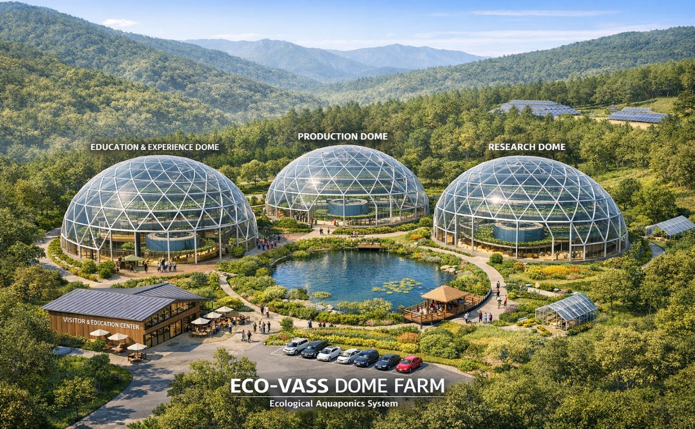

직경 35m × 높이 15m × 8단 2중구조 × 3 Dome — ECO-VASS의 \"플래그십 비전\"이자 한국형 치유농업 대표 거점의 미래입니다.

📌 우선 준비 단계 — Dome Farm은 대규모 자금이 필요한 장기 프로젝트로, 현재는 우선 \"준비에 만전을 기하는\" 단계입니다. 1계층 도시 미시공간 운영을 통해 시장 검증·운영 노하우·자금을 축적하면서, Dome Farm의 실현을 단계적으로 준비합니다.
방문객의 첫 만남. 교육·체험 중심.
4대 트랙 모든 코스의 거점.
대규모 생산 — 자급·판매·연구.
\"보는 농업\" — 5감 시각·미각 강조.
연구·실험 — 시스템 발전.
\"진화하는 시스템\" 견학.
Dome Farm은 ECO-VASS가 \"도시 일상의 작은 치유\"에서 출발해 \"한국형 치유농업의 대표 거점\"으로 성장하는 길의 도착지입니다.